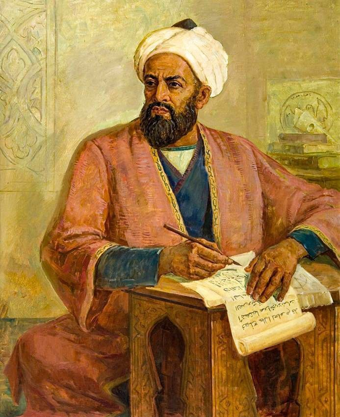
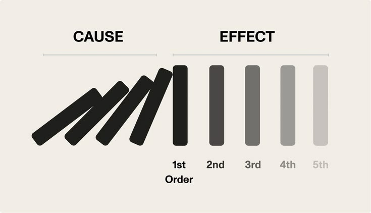

Who Was Al-Ghazali?
Al-Ghazali (Abū Ḥāmid Muḥammad ibn Muḥammad al-Ghazālī, 1058–1111 CE) was one of the most influential theologians, jurists, and philosophers in the history of Islamic philosophy. He is best known for his sharp critique of the Peripatetic philosophical tradition represented by Avicenna and Al-Farabi, and for his later turn toward Sufi mysticism.
Al-Ghazali was trained in Islamic law and theology and became one of the leading scholars of his generation in Baghdad, where he taught at the prestigious Nizamiyya madrasa. Despite this success, he later described undergoing a deep intellectual and spiritual crisis that led him to question the certainty of both theology and philosophy.
Rather than rejecting reason outright, Al-Ghazali used rigorous philosophical argument to challenge the claims of the philosophers themselves, while ultimately arguing that certain and direct knowledge of God is found through Sufi mystical experience. His work represents one of the most important internal critiques within the history of Arabic and Islamic philosophy.
Al-Ghazali: Quick Facts
- Full name — Abū Ḥāmid Muḥammad ibn Muḥammad al-Ghazālī
- Known as — Al-Ghazali or Algazel
- Born — 1058 CE, Tus, in present-day Iran
- Died — 1111 CE, Tus
- Associated with — Tus, Baghdad, and the Nizamiyya madrasa
- Philosophical tradition — Islamic theology (kalam), critique of Peripatetic philosophy, Sufism
- Major targets of critique — Avicenna and Al-Farabi
- Major philosophical subjects — Epistemology, causation, theology, logic, ethics, and mysticism
- Famous critical work — The Incoherence of the Philosophers
- Famous spiritual work — Deliverance from Error
- Key philosophical position — Occasionalism, the denial of necessary causal connection
Al-Ghazali's Early Life and Historical Background

Al-Ghazali was born in 1058 CE in Tus, in the Khorasan region of present-day Iran. He studied Islamic law and theology under leading scholars of his time and quickly gained a reputation for exceptional ability in jurisprudence, theology, and disputation.
By his mid-thirties, Al-Ghazali had become a senior professor at the Nizamiyya madrasa in Baghdad, one of the most prestigious centers of Islamic learning in the world, where he taught Islamic law and theology to large audiences of students.
According to his own account, Al-Ghazali underwent a severe intellectual and spiritual crisis around 1095 CE. Doubting whether any of his existing knowledge amounted to certain truth, he eventually left his teaching position in Baghdad and spent several years in seclusion, travel, and Sufi practice before returning to teaching later in life.
Al-Ghazali's Deliverance from Error
Deliverance from Error (al-Munqidh min al-Dalal) is Al-Ghazali's spiritual autobiography and one of the most personal philosophical works to survive from the medieval Islamic world. In it, he describes his search for certain knowledge and his growing skepticism toward the competing claims of theologians, philosophers, and other groups of his time.
The work traces Al-Ghazali's examination and eventual rejection of several paths to certainty, including scholastic theology and Peripatetic philosophy, before describing his conclusion that direct mystical experience, cultivated through Sufi practice, offered the most reliable path to certain knowledge of God.
Deliverance from Error remains widely read as both a philosophical text and a first-person account of religious doubt and resolution, and it is often compared to later Western philosophical works concerned with radical doubt and the search for certainty.
What Is The Incoherence of the Philosophers?
The Incoherence of the Philosophers (Tahafut al-Falasifa) is Al-Ghazali's best-known and most influential philosophical work. In it, he directly challenges the philosophical systems of Avicenna and Al-Farabi, arguing that many of their metaphysical claims were philosophically unproven, and that a smaller number were incompatible with core Islamic beliefs.
Al-Ghazali's method in this work is significant: rather than simply asserting theological objections, he engaged closely with the philosophers' own logical and metaphysical arguments, using their own methods to expose what he considered weaknesses in their reasoning.
Among his central targets were the philosophers' arguments for the eternity of the world, their account of God's knowledge of particulars, and their treatment of causation, all of which Al-Ghazali argued could not be established with philosophical certainty.
Al-Ghazali and Avicenna: A Philosophical Confrontation
Al-Ghazali's critique of Avicenna forms the core of The Incoherence of the Philosophers. Avicenna had built a systematic philosophical framework in which the world proceeds necessarily from a Necessary Existent through a fixed order of causation and emanation.
Al-Ghazali challenged this framework on several fronts. He argued that Avicenna's account of the world's eternity conflicted with the Islamic doctrine of creation, that Avicenna could not adequately explain how an unchanging first cause could give rise to a changing world, and that Avicenna's account of divine knowledge limited God's knowledge in ways Al-Ghazali found theologically unacceptable.
This confrontation between Al-Ghazali and Avicenna became one of the defining intellectual debates of medieval Islamic philosophy, and later thinkers, including Averroes, would go on to write direct responses defending Avicenna and Peripatetic philosophy against Al-Ghazali's objections.
Al-Ghazali's Theory of Causation and Occasionalism

One of Al-Ghazali's most philosophically significant arguments concerns causation. In The Incoherence of the Philosophers, he argues that the connection between what we call a cause and its effect, such as fire and burning, is not a logically necessary connection, but only a pattern of events that God habitually brings about together.
This position, often called occasionalism, holds that God is the true and direct cause of every event, and that natural causes are merely the customary occasions on which God acts. Al-Ghazali argued that this preserved God's omnipotence and freedom in a way that the philosophers' account of necessary causation did not.
Al-Ghazali's argument on causation has drawn comparisons to later philosophical discussions of causation and induction in Western philosophy, and it remains one of the most widely studied aspects of his thought.
Al-Ghazali's Use of Logic
Although Al-Ghazali is best known as a critic of philosophy, he did not reject logic itself. He argued that logical reasoning was a neutral tool that could be used to test the claims of theology as well as philosophy, and he wrote works aimed at making Aristotelian logic more accessible to Islamic theologians and jurists.
This willingness to use philosophical and logical tools against the philosophers themselves is part of what makes Al-Ghazali's critique distinctive: it is an internal philosophical argument rather than a simple rejection of reasoned inquiry.
Al-Ghazali's careful use of logic within The Incoherence of the Philosophers demonstrates that his disagreement with Avicenna and Al-Farabi was primarily about the scope and certainty of philosophical demonstration, not about the value of rigorous argument as such.
Al-Ghazali and Sufi Mysticism
Following his intellectual and spiritual crisis, Al-Ghazali turned increasingly toward Sufism, the mystical tradition within Islam. He came to argue that direct spiritual experience, cultivated through disciplined mystical practice, offered a kind of certainty that neither theology nor philosophy could provide on their own.
Importantly, Al-Ghazali did not present Sufism as opposed to Islamic law or rational inquiry. Instead, he argued that mystical experience completed and confirmed what reason and revelation could only partially establish, offering direct, experiential knowledge of God.
Al-Ghazali's engagement with Sufism helped bring mystical practice into closer alignment with mainstream Sunni theology, and his writings remain foundational reading within later Sufi tradition.
Al-Ghazali's Alchemy of Happiness
The Alchemy of Happiness (Kimiya-yi Sa'adat) is one of Al-Ghazali's most widely read later works, written to present his mature religious and ethical views to a broad audience in an accessible form.
The work addresses self-knowledge, knowledge of God, the nature of the world, and the cultivation of the soul, presenting spiritual and ethical development as a practical transformation, much like the alchemical transformation of base metal into gold.
Together with Deliverance from Error, this work shows Al-Ghazali's later concern with communicating philosophical and theological ideas in a form that could guide the ethical and spiritual life of ordinary believers, not only specialists in theology or philosophy.
Al-Ghazali's Epistemology and the Problem of Certainty
Al-Ghazali's epistemology is defined by his persistent concern with certainty. He questioned whether sense perception and even rational demonstration could deliver truly indubitable knowledge, describing a period in which he doubted the reliability of his own senses and reasoning.
He ultimately concluded that a special kind of certainty, granted through direct mystical experience and what he described as a divine light cast into the heart, could resolve doubts that argument alone could not settle.
This concern with radical doubt and the search for a secure foundation for knowledge has led some scholars to compare Al-Ghazali's epistemological method to later skeptical arguments in the history of philosophy, although his conclusions remain rooted in an Islamic theological and mystical framework.
Major Works of Al-Ghazali
Al-Ghazali was an extremely prolific author across theology, philosophy, law, and mysticism, with dozens of surviving works.
- The Incoherence of the Philosophers — Al-Ghazali's major critique of Avicenna and Al-Farabi's philosophical positions.
- Deliverance from Error — Al-Ghazali's spiritual autobiography describing his search for certainty.
- The Alchemy of Happiness — An accessible presentation of his mature ethical and spiritual teaching.
- The Revival of the Religious Sciences — Al-Ghazali's vast work on Islamic law, theology, ethics, and spiritual practice.
- The Niche of Lights — A shorter mystical and philosophical work concerned with divine light and knowledge of God.
- Moderation in Belief — A theological work presenting Al-Ghazali's positions in systematic Islamic theology (kalam).
Al-Ghazali's Main Philosophical Ideas
1. Philosophy's Claims Are Not Certain
Al-Ghazali argued that several central claims of Peripatetic philosophy, particularly concerning the eternity of the world, could not be established with philosophical certainty.
2. Occasionalism and Divine Causation
Al-Ghazali denied necessary causal connection between events, arguing instead that God is the true and direct cause of what appears to be natural causation.
3. Logic as a Neutral Tool
Al-Ghazali accepted the value of logical reasoning itself and used it to challenge the philosophers on their own terms.
4. Mystical Certainty
Al-Ghazali concluded that direct Sufi mystical experience offered a form of certainty that neither theology nor philosophy alone could fully provide.
5. Practical, Ethical Religion
In his later works, Al-Ghazali emphasized the practical cultivation of the soul and ethical life as the proper goal of both theology and philosophy.
Al-Ghazali's Influence and Legacy
Al-Ghazali's influence on Islamic philosophy and theology was immense. The Incoherence of the Philosophers is traditionally regarded as a major turning point that weakened the standing of Peripatetic philosophy within mainstream Sunni Islamic thought, even as philosophical inquiry continued in other forms and regions.
His critique did not go unanswered. A century later, the philosopher Averroes wrote The Incoherence of the Incoherence, a detailed defense of Avicenna and Peripatetic philosophy against Al-Ghazali's objections, continuing the debate Al-Ghazali had begun.
Beyond philosophy, Al-Ghazali's integration of Sufism with mainstream Islamic law and theology had a lasting effect on Islamic religious life, helping establish mystical practice as a respected part of orthodox Sunni tradition rather than a marginal movement.
His works were also read and discussed beyond the Islamic world, influencing later philosophical and theological debates concerning causation, certainty, and the limits of reason.
Al-Ghazali's Philosophy Explained Simply
Al-Ghazali can be understood as a brilliant scholar who used philosophy's own tools to question philosophy's certainty, and who ultimately concluded that direct spiritual experience, not argument alone, offered the surest path to knowledge of God.
- Did Al-Ghazali reject reason? No. He used logical argument extensively, but denied that philosophy could deliver certainty on questions like the eternity of the world.
- What did he think about cause and effect? He argued that apparent causes are not necessarily connected to their effects, and that God is the true cause behind natural events.
- Why did he turn to Sufism? After a personal crisis of doubt, he concluded that mystical experience offered a certainty that theology and philosophy could not fully provide.
- Was he against Avicenna specifically? Yes, in large part. Much of his major philosophical work directly targets Avicenna's metaphysical system.
- Did his critique end Islamic philosophy? No, but it is widely seen as a major turning point that significantly reduced the influence of Peripatetic philosophy within mainstream Sunni thought.
Why Is Al-Ghazali Important in the History of Philosophy?
Al-Ghazali is important because he produced one of the most rigorous and influential internal critiques of philosophy within the Islamic tradition, directly challenging the systematic framework built by Avicenna and Al-Farabi.
His arguments concerning causation, certainty, and the limits of philosophical demonstration remain widely studied, both within Islamic philosophy and in comparative discussions with later Western philosophical skepticism.
His importance is therefore both philosophical and religious: he reshaped the relationship between philosophy, theology, and mysticism within Sunni Islam, and his influence is still felt in Islamic thought today.
Frequently Asked Questions About Al-Ghazali
Who was Al-Ghazali?
Al-Ghazali was an eleventh-century Islamic theologian, jurist, and philosopher, best known for his critique of philosophy in The Incoherence of the Philosophers and for his later turn toward Sufi mysticism.
What is Al-Ghazali known for?
Al-Ghazali is known for The Incoherence of the Philosophers, his critique of Avicenna's metaphysics, his theory of occasionalism, his spiritual autobiography Deliverance from Error, and his influence on Islamic theology and Sufism.
Did Al-Ghazali destroy Islamic philosophy?
Al-Ghazali did not end Islamic philosophy, but his critique in The Incoherence of the Philosophers is traditionally seen as a major turning point that weakened the standing of Peripatetic philosophy within Sunni Islamic thought, even as philosophical inquiry continued in other forms.
What is The Incoherence of the Philosophers?
The Incoherence of the Philosophers is Al-Ghazali's major work attacking the philosophical positions of Avicenna and Al-Farabi, arguing that several of their metaphysical claims were philosophically unproven and, in some cases, incompatible with Islamic belief.
What is Al-Ghazali's philosophy of causation?
Al-Ghazali argued against necessary causal connection between events, proposing instead that God directly causes what appears to be cause and effect, a position known as occasionalism.
Why did Al-Ghazali turn to Sufism?
According to his own account in Deliverance from Error, Al-Ghazali experienced a personal epistemological and spiritual crisis that led him to conclude that certainty and closeness to God were found through Sufi mystical experience rather than through philosophical argument alone.
What is the difference between Al-Ghazali and Avicenna?
Avicenna built a systematic philosophical framework grounded in Aristotelian and Neoplatonic reasoning, while Al-Ghazali, working a generation later, challenged key parts of that framework as philosophically unproven and defended a theological and mystical alternative rooted in Islamic revelation and Sufi experience.
Related Islamic and Arabic Philosophers
Explore other major thinkers in the development of Islamic philosophy, Arabic philosophy, Persian philosophy, and medieval intellectual history.
Related Areas of Philosophy
Al-Ghazali's work connects the history of Islamic philosophy with epistemology, metaphysics, ethics, philosophy of religion, and the critique of Peripatetic philosophy.
Why Al-Ghazali Still Matters
Al-Ghazali occupies a pivotal position in the history of Islamic philosophy and theology. His rigorous critique of Avicenna and Al-Farabi in The Incoherence of the Philosophers reshaped the relationship between philosophy and Islamic orthodoxy, while his turn toward Sufism helped bring mystical practice into the mainstream of Sunni religious life.
His arguments concerning causation, certainty, and the limits of philosophical demonstration remain widely discussed, and his direct confrontation with Avicenna's system produced one of the most consequential philosophical debates of the medieval period, continued a century later by Averroes.
Understanding Al-Ghazali also helps explain the intellectual background against which later Islamic philosophy, theology, and Sufi thought continued to develop.
Explore Great Philosophers